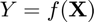
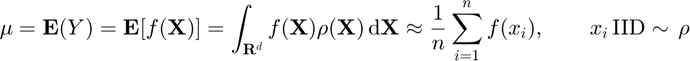
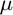
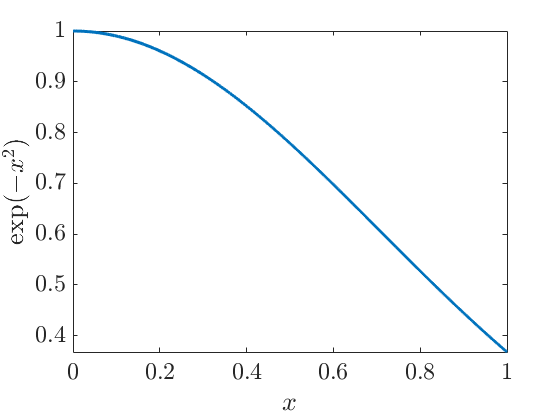
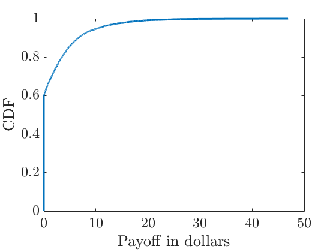
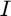
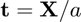
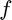

Estimation of the Expected Value Using meanMC_CLT
For a random variable , we will estimate its expected value:

We will approximate  using the meanMC_CLT GAIL algorithm. It is an IID Monte Carlo algorithm using the Central Limit Theorem to determine the sample size required to meet the desired error tolerance. In order to improve computation efficiency, we will also use control variates.
Contents
function demo_meanMC_CLT
Initialize the workspace and set the display parameters
This script cleans up the workspace and makes the display beautiful.
gail.InitializeWorkspaceDisplay
%initialize the workspace and the display parameters
Example 1: Estimate where and using as a control variate
In this example a function that cannot be integrated analytically is integrated using our adaptive IID Monte Carlo method. We also use the function as a control variate.
First we plot our function
f = @(x)[exp(-x.^2), x]; YXn = @(n)f(rand(n,1)); %set up the random variable figure %plot f(x) x = (0:0.001:1)'; %x values for plot fx = f(x); plot(x,fx(:,1),'-'); ylabel('$\exp(-x^2)$') xlabel('$x$')
Next we set up the parameters for Monte Carlo integration
absTol = 1e-3; %absolute tolerance relTol = 0; %relative tolerance s = struct('Y',YXn,'nY',1,'trueMuCV',1/2); % create a structure containing random variables, % number of random variables and mean of the control variates [hmu,out] = meanMC_CLT(s,absTol,relTol); % calculate the mean exactsol = erf(1)*sqrt(pi)/2; %true mean disp('Example 1') disp(['Estimated mean is: ' num2str(hmu)]) disp([' True mean is: ' num2str(exactsol)]) disp(['The algorithm took ' num2str(out.time) ' seconds and '... num2str(out.nSample) ' points.']) disp(['Real error was ' ... num2str(abs(exactsol-hmu))... ' which is less than the user input tolerance '... num2str(absTol) '.'])
Example 1
Estimated mean is: 0.74721
True mean is: 0.74682
The algorithm took 0.12612 seconds and 9925 points.
Real error was 0.00038994 which is less than the user input tolerance 0.001.
Example 2: Price European Call Option
This time we price a European call option using the stock price as a control variate.
Initialize option parameters for a European call option
inp.timeDim.timeVector = 0:0.25:1; %time increments inp.assetParam.initPrice = 10; %initial stock price inp.assetParam.interest = 0.01; %risk-free interest rate inp.assetParam.volatility = 0.5; %volatility inp.payoffParam.strike = 10; %strike price inp.priceParam.absTol = 0.01; %absolute tolerance of a penny inp.priceParam.relTol = 0; %relative tolerance EuroCall = optPayoff(inp); %create a European call option payoff object EuroCallPayoff = @(n) genOptPayoffs(EuroCall,n); %identify the payoff function
Plot an empirical distribution of the European call option
n = 1e4; %number of payoffs to plot payoffs = EuroCallPayoff(n); %generate n payoffs sortedpay = sort(payoffs); %sort them figure plot(sortedpay,((1:n)-1/2)/n,'-'); %plot the empirical distribution function scenarios xlabel('Payoff in dollars') ylabel('CDF') axis([0 50 0 1])
Note that the option has a positive payoff only about 60% of the time.
Next we price the option using simple IID Monte Carlo. We happen to have a formula for the exact price that can be used to check our error.
[hmu,out] = meanMC_CLT(EuroCallPayoff,inp.priceParam.absTol,inp.priceParam.relTol); disp(['Estimated price is: ' num2str(hmu)]) disp([' Exact price is: ' num2str(EuroCall.exactPrice)]) disp(['The algorithm took ' num2str(out.time) ' seconds and '... num2str(out.nSample) ' points.']) disp(['Real error was ' ... num2str(abs(EuroCall.exactPrice-hmu))... ' which is less than the user input tolerance '... num2str(inp.priceParam.absTol) '.'])
Estimated price is: 2.0119
Exact price is: 2.0144
The algorithm took 0.5512 seconds and 1959107 points.
Real error was 0.0025789 which is less than the user input tolerance 0.01.
Now we use the stock price as a control variate. To do that, we need to modify the option payoff object by adding the stock price.
EuroCallCV = optPayoff(EuroCall); %make a copy of the European call option parameters EuroCallCV.payoffParam = struct('optType', {{'euro','stockprice'}}, ... 'putCallType', {{'call',''}}); %identify the option type EuroCallCVPayoff = @(n) genOptPayoffs(EuroCallCV,n); %identify the payoff function s=struct('Y',EuroCallCVPayoff,'nY',1,'trueMuCV',EuroCallCV.assetParam.initPrice); [hmu,out] = meanMC_CLT(s,inp.priceParam.absTol,inp.priceParam.relTol); disp(['Estimated price is: ' num2str(hmu)]) disp([' Exact price is: ' num2str(EuroCallCV.exactPrice(1))]) disp(['The algorithm took ' num2str(out.time) ' seconds and '... num2str(out.nSample) ' points.']) disp(['Real error was ' ... num2str(abs(EuroCallCV.exactPrice(1)-hmu))... ' which is less than the user input tolerance '... num2str(inp.priceParam.absTol) '.'])
Estimated price is: 2.0172
Exact price is: 2.0144
The algorithm took 0.15109 seconds and 183113 points.
Real error was 0.0027428 which is less than the user input tolerance 0.01.
Let's compare how meanMC_CLT works on pricing a European call option with and without a control variate. While the two methods both give answers within the error tolerance, adding a control variate uses only about 1/9 of sample points and takes 1/5 of the time.
Acutally, in GAIL we have a function genOptPrice that could direcelty compute a call option price.
First we compute the answer without control variates
inp.priceParam.cubMethod = 'IID_MC_CLT'; %set method EuroCall = optPrice(inp); %create an object for computation of the price [EuroCallPrice, out] = genOptPrice(EuroCall); %compute the option price disp(['Estimated price is: ' num2str(EuroCallPrice)]) disp([' Exact price is: ' num2str(EuroCall.exactPrice)]) disp(['The algorithm took ' num2str(out.time) ' seconds and '... num2str(out.nPaths) ' points.']) disp(['Real error was ' ... num2str(abs(EuroCall.exactPrice-EuroCallPrice))... ' which is less than the user input tolerance '... num2str(inp.priceParam.absTol) '.'])
Estimated price is: 2.0086
Exact price is: 2.0144
The algorithm took 0.4553 seconds and 1527714 points.
Real error was 0.0057941 which is less than the user input tolerance 0.01.
And then we compute the answer with control variates
EuroCallCV = optPrice(EuroCall); %make a copy of the European call option parameters EuroCallCV.payoffParam = struct('optType', {{'euro','stockprice'}}, ... 'putCallType', {{'call',''}}); %identify the option type [EuroCallCVPrice, out] = genOptPrice(EuroCallCV); %compute the option price disp(['Estimated price is: ' num2str(EuroCallCVPrice(1))]) disp([' Exact price is: ' num2str(EuroCallCV.exactPrice(1))]) disp(['The algorithm took ' num2str(out.time) ' seconds and '... num2str(out.nPaths) ' points.']) disp(['Real error was ' ... num2str(abs(EuroCallCV.exactPrice(1)-EuroCallCVPrice(1)))... ' which is less than the user input tolerance '... num2str(inp.priceParam.absTol) '.'])
Estimated price is: 2.013
Exact price is: 2.0144
The algorithm took 0.10042 seconds and 199810 points.
Real error was 0.0014196 which is less than the user input tolerance 0.01.
Example 3: Keister's multidimensional integration
We will evaluate the Keister's integral  using meanMC_CLT. Note that the we do a change of variable  and transform the integral:
![$$
\begin{array}{cl}
I &= \int_{\mathbf{R}^d} \cos(\| \mathbf{X} \|)
\exp(-\| \mathbf{X} \|^2) \, \mathrm{d} \mathbf{X} \\
&= \int_{\mathbf{R}^d} a^d \cos(a \| \mathbf{t}
\| ) \exp(-a^2 \| \mathbf{t} \| ^2) \, \mathrm{d}
\mathbf{t}, \qquad a > 0, \\
& = \int_{\mathbf{R}^d} \underbrace{(2\pi a^2)^{d/2}
\cos(a \| \mathbf{t} \|) \exp((1/2-a^2) \| \mathbf{t} \|^2)}_{f(\mathbf{t})}
\times \underbrace{\frac{\exp(-\| \mathbf{t} \|^2/2)}
{(2\pi)^{d/2}}}_{\varrho(\mathbf{t})} \, \mathrm{d} \mathbf{t} \\
& = \mathbf{E}[f(\mathbf{T})], \qquad \mathrm{where} \quad \mathbf{T}
\sim \mathcal{N}(\mathbf{0},\mathbf{I}).
\end{array}
$$](demo_meanMC_CLT_eq05527225691521071060.png)
define an anonymous function  as follows:
normsqd = @(t) sum(t.*t,2); %squared l_2 norm of t f1 = @(normt,a,d) ((2*pi*a^2).^(d/2)) * cos(a*sqrt(normt)) ... .* exp((1/2-a^2)*normt); f = @(t,a,d) f1(normsqd(t),a,d); abstol = 0; %absolute tolerance reltol = 0.01; %relative tolerance dvec = 1:5; %vector of dimensions avec = [1 1/sqrt(2) 1/sqrt(1.5) 1/sqrt(3)]; %trial values of a IMCvec(size(dvec)) = 0; %vector of answers f2 = @(t,d) cell2mat(arrayfun(@(a) f(t,a,d),avec,'UniformOutput',false)); %a vector of functions for each value of a outT = zeros(size(dvec)); %vector of time outN = zeros(size(dvec)); %vector of points for d = dvec f3 = @(t)f2(t,d);%integration in dimension d YXn = @(n)f3(randn(n,d));%random generator s = struct('Y',YXn,'nY',size(avec,2)); [IMCvec(d),out] = meanMC_CLT(s,abstol,reltol); outT(d) = out.time; outN(d) = out.nSample; end Ivec = zeros(size(dvec)); %vector of true integration for d = dvec Ivec(d) = Keistertrue(d); %true integration end error=abs(Ivec-IMCvec)./abs(Ivec); %calculate the relative error %display a result table title ='Dimension Est. Mean True Mean Rel. Error N Time'; datasave=[dvec; IMCvec; Ivec; error; outN; outT]; disp(title) fprintf(' %1.0f %2.4f %2.4f %2.4f %8.0f %2.4f \n', datasave)
Dimension Est. Mean True Mean Rel. Error N Time
1 1.3446 1.3804 0.0259 2529 0.0309
2 1.8052 1.8082 0.0016 11733 0.0196
3 2.1763 2.1683 0.0037 78359 0.0257
4 2.1656 2.1659 0.0002 285773 0.0746
5 1.1325 1.1353 0.0025 3605978 1.1077
Author Yueyi Li